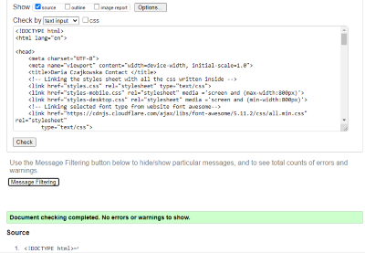

Report of the development of the website
Brief:
This report will be about the development of this website. It will talk through the design, the development stages and errors encountered. The report is laid out in chronological order so that it is easier to follow and read.
Module experience:
At the very beginning it is worth to mention that I am repeating this module as I have failed it last year. My experience of the module has improved with time, it started off with me having very little of knowledge about web development or interface design however now I can confidently say that my understanding of the module has significantly increased. I can create simple websites using html and css that follow current standards and conventions. I have used parts of my code from the previous year; however, I have adapted it to suit the new structure of the website as well as that it is referenced in the code itself.
Designing the website
Research
Before I thought about the design for my website, I decided to do some research first. I have looked at multiple portfolio websites created by web developers get some ideas and inspiration before drafting wireframes.
Firstly, I came across a website by Ian Lunn (https://ianlunn.co.uk)
The reason why I chose this website is because it adapts very well to different sized devices the examples can be seen below. The image on the left shows the web page viewed on a normal sized desktop computer or a laptop the navigation is static at the top of the page so the user can easily navigate through the website. The image on the right shows the website viewed on a mobile phone/tablet, the main difference is the navigation because on the mobile version it has changed to a hamburger type navigation which saves space and makes the mobile version look cleaner.
The second website I looked at was by Timmy O’Mahony (https://timmyomahony.com/)
The reason I chose this website is because it's simple while being informative. I would like my website to be as simple and well structured as Timmy O’Mahony’s . Image below shows how the website looks like.
Another example that I found was by Dejan Markovic (https://www.dejan.works/)
This website is so interesting to navigate around and its very minimalistic. This website also uses good contrast with colors to accent the important things. However for this project I will stick to a lighter theme rather than a darker one.
Wire frames for my website
Before I started to develop my website, I decided to do wireframes of the general layout of all my pages.
Index Page
CV Page
Portfolio Page
Contact Page
Site Report Page

Implementing the website
Programming the website was not too challenging once I had the structure and colors in my head. I started off with programming the navigation bar and linking everything to GitHub so that everything is properly backed up.
Next, I have programmed each page individually focusing on the features and requirements from the specification. I took some code from my previously implemented page for web development assignment 2 from the previous year.
Validating the HTML and CSS code
Validating index.html
I used the W3C validator to validate my HTML websites. The photo underneath shows the result of me running the website through the validator for the first time.

I had few errors and warnings that were syntax errors so they could be easily resolved. The image underneath shows the outcome from the validator once all errors and warnings have been addressed.
Validating cv.html
Some errors were present in all the websites because I copied and pasted some sections of code so that my website looks consistent. Therefore, before I ran the cv page code through the validator I corrected the errors that were brought up when validating the index page. As a result of that this website had no errors when validated.
Validating portfolio.html
Validating contact.html
First validation of the Portfolio page.
Validation after correcting the error.
Validating sitereport.html
First validation of the Site Report page.
Validation after correcting the error.
Validation after correcting the error.
Validating styles.css
For CSS validation I have also used W3C.
First validation of the CSS style sheet.

Validation after correcting the error.
Validating styles-mobile.css
Validating styles-desktop.css
Testing
After I have finished the whole website, I made sure that all links were working and linked to the correct pages and that all the pictures loaded correctly.
To ensure that my assignment can be viewed from any place on my computer I have moved the folder to a different place and ran the website. Which did work from various places on my laptop.
The website is also adapted to be used on devises such as mobile and to test that I opened the website in google chrome and used the built-in tool called inspect in which you can change the screen sizes and see how your website handles different screen sizes. The mobile adaptation is basic using media queries however it provides a satisfactory outcome.